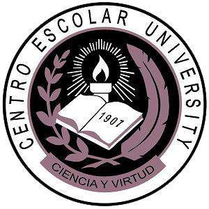

Vision:
CEU is the University of first choice – the leading higher education institution fostering excellence in the pursuit of knowledge while engendering personal integrity and social responsibility.
Mission:
CEU is committed to:
Provide a rich and stimulating academic environment in order to promote creative and scholarly academic pursuits among its faculty and to equip students with the knowledge, skills, sound moral values, and an appreciation of arts and culture that would prepare them to become productive and innovative professionals with a commitment to nation building in the context of one world;
Enhance the development of higher education in the Philippines through its exemplar academic programs and practices, leadership in professional organizations, and participation in academic consortia;
Contribute to the promotion of human health and well-being through high-quality programs in health professional education, research, and community service.